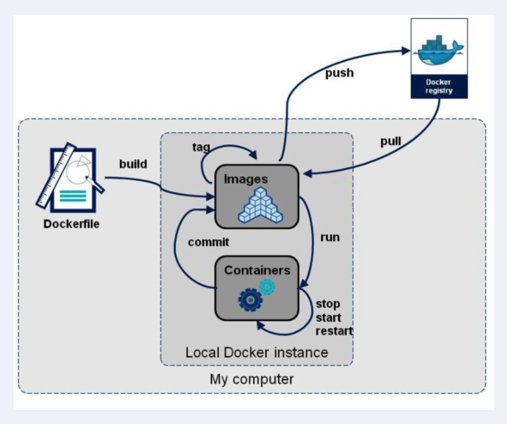

Docker 复杂安装详说
安装MySQL主从复制
主从复制的简介
在实际的生产中，为了解决Mysql的单点故障已经提高MySQL的整体服务性能，一般都会采用「主从复制」。
比如：在复杂的业务系统中，有一句sql执行后导致锁表，并且这条sql的的执行时间有比较长，那么此sql执行的期间导致服务不可用，这样就会严重影响用户的体验度。
主从复制中分为「主服务器（master）「和」从服务器（slave）」，「主服务器负责写，而从服务器负责读」，Mysql的主从复制的过程是一个「异步的过程」。
这样读写分离的过程能够是整体的服务性能提高，即使写操作时间比较长，也不影响读操作的进行。
主从复制的原理
首先放一张Mysql主从复制的原理图，总的来说Mysql的主从复制原理还是比较好理解的，原理非常的简单。

Mysql的主从复制中主要有三个线程：master（binlog dump thread）、slave（I/O thread 、SQL thread），Master一条线程和Slave中的两条线程。
master（binlog dump thread）主要负责Master库中有数据更新的时候，会按照binlog格式，将更新的事件类型写入到主库的binlog文件中。
并且，Master会创建log dump线程通知Slave主库中存在数据更新，这就是为什么主库的binlog日志一定要开启的原因。
I/O thread线程在Slave中创建，该线程用于请求Master，Master会返回binlog的名称以及当前数据更新的位置、binlog文件位置的副本。
然后，将binlog保存在 「relay log（中继日志）」 中，中继日志也是记录数据更新的信息。
SQL线程也是在Slave中创建的，当Slave检测到中继日志有更新，就会将更新的内容同步到Slave数据库中，这样就保证了主从的数据的同步。
以上就是主从复制的过程，当然，主从复制的过程有不同的策略方式进行数据的同步，主要包含以下几种：
- 「同步策略」：Master会等待所有的Slave都回应后才会提交，这个主从的同步的性能会严重的影响。
- 「半同步策略」：Master至少会等待一个Slave回应后提交。
- 「异步策略」：Master不用等待Slave回应就可以提交。
- 「延迟策略」：Slave要落后于Master指定的时间。
对于不同的业务需求，有不同的策略方案，但是一般都会采用最终一致性，不会要求强一致性，毕竟强一致性会严重影响性能。
主从搭建步骤
安装redis集群（大厂面试题-分布式存储案例）
DockerFile 解析
DockerFile 是什么
DockerFile 是用来构建Docker镜像的文本文件，是由一条条构建镜像所需的指令和参数构成的脚本。
概述
如果我们想拥有一个增强型的docker镜像，就需要多次添加功能然后commit。这样非常繁琐，而且也很消耗IO

官网
https://docs.docker.com/engine/reference/builder
构建三步骤
- 编写DockerFile
- docker build 命令构建镜像
- docker run 依照新编写好的镜像运行容器实例
DockerFile 构建过程解析
DockerFile 的基础内容知识
- 每条关键字指令都必须为大写字母且后面要跟随至少一个参数
- 指令按照从上到下，顺序执行
- #表示注释
- 每条指令都会创建一个新的镜像层并对镜像进行提交
Docker 执行 DockerFile 的大致流程
- Docker 从基础镜像运行一个容器
- 执行一条指令并对容器做出修改
- 执行类似 docker commit 的操作提交一个新的镜像层
- docker 再基于刚提交的镜像运行一个新的容器
- 执行 dockerfile 中的下一条指令直到所有指令都执行完成
小总结
从应用软件的角度来看，DockerFile、Docker镜像与Docker容器分别代表软件的三个不同阶段
- DockerFile 是软件的原材料
- Docker 镜像是软件的交付品
- Docker 容器则可以认为是软件镜像的运行态，也即依照镜像运行的容器实例
DockerFile 面向开发，Docker 镜像称为交付标准，Docker 容器则涉及部署与运维，三者缺一不可，合力充当Docker体系的基石。

- DockerFile：需要定义一个DockerFile，DockerFile 定义了进程需要的一切东西。DockerFile涉及的内容包括执行代码或者是文件、环境变量、依赖包、运行时环境、动态链接库、操作系统的发行版、服务进程和内核进程（当应用进程需要和系统服务和内核进程打交道，这时需要考虑如何设计namespace的权限控制）等等；
- Docker 镜像：在用 DockerFile 定义一个文件后，docker build 时会产生一个Docker镜像，当运行Docker镜像时会真正开始提供服务；
- Docker 容器：容器时直接提供服务的；
DockerFile 常用保留字指令
参考 tomcat8 的 dockerfile 入门：https://github.com/docker-library/tomcat
FROM
基础镜像，当前新镜像时基于哪个镜像的，指定一个已经存在的镜像作为模板，第一条必须是from
1 | # tomcat 镜像来自于 amazoncorretto 版本号为8 |
MAINTAINER
镜像维护者的姓名和邮箱地址
RUN
容器构建时需要运行的命令
两种格式
shell 格式
RUN <命令行命令><命令行命令> 等同于，在终端操作的 shell 命令。
exec 格式
RUN 是在 docker build 时运行
RUN ["可执行文件","参数1","参数2"]RUN ["./test.php","dev","offline"] 等价于 RUN ./test.php dev offline